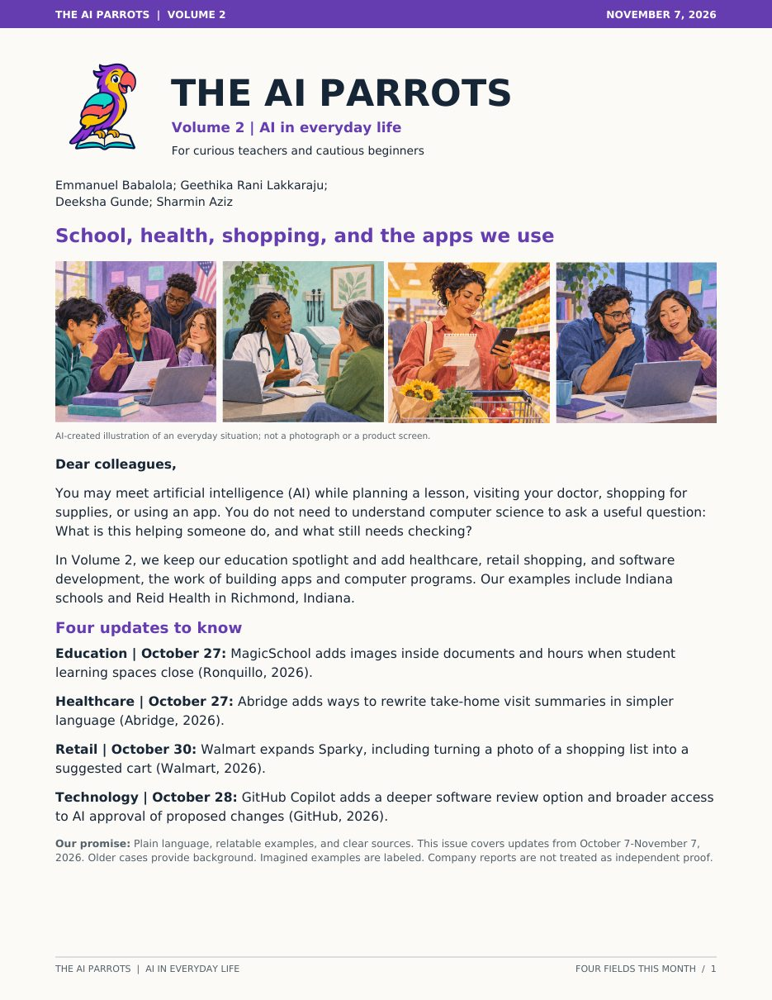

Read the full newsletter (PDF)
Introduction
Most people now meet AI without choosing to, at school, at the doctor, while shopping or inside the apps they use every day. News about AI often skips the two questions that matter most to them: what is this helping someone do, and what still needs checking? Our team wrote a newsletter that answers those questions in plain language.
Description
The AI Parrots is a six-page newsletter for teachers and people new to AI. Volume 2 covers four commercial AI updates released between October 7 and November 7, 2026, one each in education, healthcare, retail and technology. Each section explains the real product update, what changes in daily work, who still makes the decision, and a question readers can take to their own team or classroom.
I created it with my AIML-500 teammates Emmanuel Babalola, Geethika Rani Lakkaraju and Sharmin Aziz.
Objective
We wanted to show how AI is already used commercially and how it changes business processes and decision-making, without hype. Our goal was to help a non-technical reader understand each update, see where it fits in real work, and know what to check before trusting it.
Process
- Chose four industries. We picked education, healthcare, retail and technology so readers could see the same pattern across very different settings.
- Researched recent releases. We looked for commercial AI updates from the past month and used the companies' own announcements as sources.
- Paired each update with a real case. Each section connects the new feature to an organization already using the product, including Indiana schools and Reid Health in Richmond, Indiana.
- Wrote for our audience. We used plain language, labeled imagined examples clearly and treated company-reported results as claims, not independent proof.
- Designed it to be read. Each spotlight has an illustration, a short headline, "the work" and "the choice" in every section, and a discussion question at the end.
What we found across all four
| Industry | What AI now does | What people still decide |
|---|---|---|
| Education | Adds images inside documents and sets hours for student AI spaces | Whether materials are accurate and when students should have access |
| Healthcare | Rewrites visit summaries in simpler words | Whether the simpler version keeps the medical meaning |
| Retail | Turns a photo of a shopping list into a suggested cart | Whether the items, quantities and prices fit the need |
| Technology | Reviews and can approve proposed software changes | Which changes need a person’s approval and testing |
Tools and Technologies Used
Value Proposition
Unique Value
Most AI news either celebrates a launch or warns about it. This newsletter does neither. It separates what a company announced from what has been independently shown, labels every imagined example, and keeps the focus on one habit that works in any industry: ask what changed after a person checked the result. As an analytics engineer, I check data before anyone uses it, and this project applies the same idea to AI.
Relevance
AI is reaching people faster than most of them can learn about it. Schools, clinics, retailers and software teams all need people who can explain AI clearly to non-technical audiences and set sensible checks around it. This project shows that skill, along with researching current developments and working as part of a team.
References
- Abridge. (2026, October 27). Now in practice: October 2026.
- Abridge. (n.d.). Reid Health boosts efficiency across the entire care team.
- GitHub. (2026, October 28). Copilot code review: Merge with confidence with Max and approvals.
- GitHub. (n.d.). Duolingo empowers its engineers to be force multipliers for expertise with GitHub Copilot.
- MagicSchool. (n.d.). Quality and responsible AI at MagicSchool.
- Mt. Vernon Community School Corporation. (n.d.). MVCSC beliefs and approach regarding AI.
- Ronquillo, M. (2026, October 27). October MagicDrop: What’s new in MagicSchool. MagicSchool.
- Walmart. (2026, October 30). Sparky makes holiday magic real.
Full source links are in the newsletter PDF.